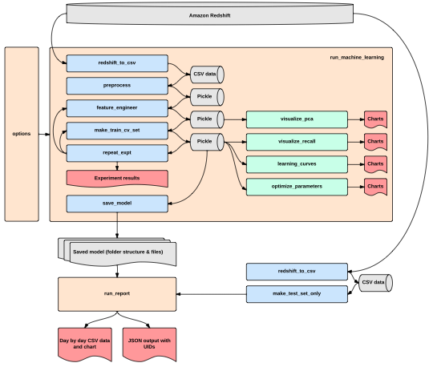

Situation
An e-commerce site wanted to increase the proportion of new registrants converting to a premium subscription. However, deep promotions were being sent to millions of users indescriminantly, potentially damaging the brand. This project was carried out to automatically identify the top 1-10% of potential subscribers on a daily basis, thus enabling far more targeted promotions.
Solution
A logistic regression model has been built, identifying 1-week old users most likely to purchase. By identifying just 10% of the population, 75% of future purchases are caught (i.e. recall of 75% by picking 1 in 10 users). Users who are predicted to purchase by the model but who haven't yet purchased can now be sent appropriate discounts.
The project uses user data and event log data (tracked from KISSmetrics). Overall 8 different features have been identified to predict likely purchasers (though many more were tested). Model parameters (and the choice of logistic regression over other models) have been based tests using 20-fold cross validation across a dataset with over 100,000 registrants.
In addition to predicting likely purchasers on a daily basis, the script produces a daily report on previous prediction success (graphically and in CSV format). For a full (anonymised) PDF report, please contact me using the contact form on this site.

Schematic showing design of the final code. The upper half shows the pipeline for learning and optimising parameters, outputting charts, reports and cross-validation results, and saving the model. The lower half shows the process repeated on a daily basis, whereby 1-week old registrants are treated as a the test set, and the most likely purchasers are identified.
How it works
User data and event log data is extracted from Redshift using a Python script. In training, this data is preprocessed, feature engineering takes place, and a model (with parameters optimised previously) is saved to an external file structure. The logistic regression model is built using Python's scikit-learn package. This training process is all controlled through one main pipeline script, calling on separate modules as detailed in the diagram above. Separately, and on a daily basis, a report script pulls the latest data from Redshift, calculates likely purchasers (based on their first week of data, and using the model generated previously) and exports a list of user IDs for promotional purposes. Additionally, all previous predicted purchasers are re-visited - what proportion have now purchased (and what proportion of all purchasers were predicted)? These results are output on a daily basis.